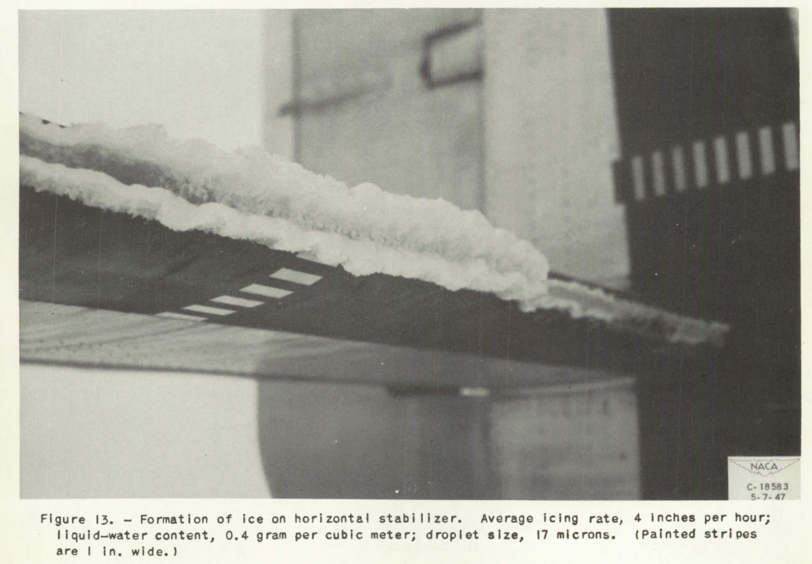

"The rotating-cylinder technique of determining water content and drop-size distribution cannot therefore be used without consideration of the heat economy"
F. H. Ludlam, "The Heat Economy of a Rimed Cylinder" 1
Summary
Various "Ludlam Limits" have been implemented, but they …
"If the values of the K and φ parameters for the model and full-scale nacelle are maintained the same, the icing characteristics of the model will be similar to the icing characteristics of the full-scale"
"I'm burning through the sky, yeah
Two hundred degrees, that's why they call me Mister Fahrenheit
I'm travelling at the speed of light
I wanna make a supersonic woman of you"
from Queen, "Don't Stop Me Now"
The AEDC 1-Dimensional Multi-Phase code (AEDC1DMP) and the iads1dmp
Abstract
The AEDC1DMP calculates the water drop speed and evaporation in an icing wind tunnel.
The AEDC1DMP is described in "Second Report for Research and Modeling of Water Particles in Adverse …
"An unfortunate fact is that if proposed additional scaling parameters prove to be what is required to conduct improved subscale tests, icing wind tunnel subscale tests are likely to be even more restrictive."
"Proposed Modifications to Ice Accretion/Icing Scaling …
"Considerable time [was devoted] to means for controlling the amount of water sprayed into the air stream, the size of water particles, and the temperatures of the air and water" 1
"Icing wind tunnels can simulate natural icing with water-spray and refrigeration systems ... to permit safe, convenient and relatively inexpensive testing."1
While there were extensive publications on how to use aerodynamic wind tunnels in the NACA-era
(for example …
"The danger lies, not so much in the higher stalling speed, but more in the possibility that the stall may occur without advance warning to the pilot."
NACA-WR-L-292, "Effects of a Simulated Ice Formation on the Aerodynamic Characteristics of an …
"Aircraft icing is one of the major weather hazards to aviation. Icing is a cumulative hazard. It reduces aircraft efficiency by increasing weight, reducing lift, decreasing thrust, and increasing drag."
"... the recommendation was made that before attacking what appeared to be a new icing problem we should study the icing work of the 1940's and 50's." 1
Summary
A "Selected Bibliography of NACA-NASA Icing Publications" identified 132 publications in 16 …
"The equations were found to fit the experimental data over a wider range of values..." 1
Summary
The correlations for water drop impingement on a cylinder from
"Mathematical Investigation of Water Droplet Trajectories" 1
are implemented in the Python programming …
"This effect would be expected if the droplets were of non-uniform size, since the largest droplets could reach the largest collector while those of average size could not." 1
Summary
The calculations to determine drop median volumetric diameter with a …
"The rotating-cylinder method of measuring liquid water content is generally regarded as being the most accurate and dependable procedure thus far developed"
“A Flight Investigation of the Meteorological Conditions Conducive to the Formation of Ice on Airplanes"
"It is significant that the control response of the airplane approached the point of being marginal when all of the airplane except the propeller had accreted ice"

NACA-TN-1598, "Effects of Ice Formations on Airplane Performance in Level Cruising Flight" 1 …
"Many data points were carefully calculated in order to determine precisely the rate of droplet impingement on the surface of a right circular cylinder."
"Impingement of Water Droplets on a Cylinder in an Incompressible Flow Field and Evaluation of Rotating …
"The results showed that glaze-ice formations, either primary or runback, ... caused large and rapid increases in drag, especially at datum air temperatures approaching 32F"
NACA-TN-2962, "Effect of Ice and Frost Formations on Drag of NACA 651-212 Airfoil for …
>"a method has been developed ... to determine the droplet size distribution of the impinging cloud"
"A Dye-Tracer Technique for Experimentally Obtaining Impingement Characteristics of Arbitrary Bodies and a Method for Determining Droplet Size Distribution" 1
"... the effect on final results of droplets that do not freeze completely on the cylinders"
"Impingement of Cloud Droplets and Procedure for Measuring Liquid-Water Content and Droplet Sizes in Supercooled Clouds by Rotating Multicylinder Method. "1
"... the effect on final results of droplets that do not freeze completely on the cylinders"
"Impingement of Cloud Droplets and Procedure for Measuring Liquid-Water Content and Droplet Sizes in Supercooled Clouds by Rotating Multicylinder Method" [Thermodynamics topics] 1
"As regards the lift at higher angles of attack ..., the [effect] becomes increasingly serious as the protuberance approaches a point near the leading edge."
NACA-TR-446, "Airfoil Section Characteristics as Affected by Protuberances" 1
"It has been shown that the temperature of the surface of the wing in conditions of icing can be predicted with considerable exactitude from the temperatures measured in clear air."
"An Analysis of the Dissipation of Heat in Conditions of …
"Upon comparing this chart with Langmuir's tables (reference 7), it was found that his selections of the representative radii for the various sub-divisions of the volume were in error." 1
Summary
The Langmuir B drop size distribution is almost a …
"[LWC] limits have been calculated for a rotating cylinder.., and the results show that rotating cylinder measurements are of limited usefulness and may, in fact, prove entirely misleading as regards both water content and droplet size."
"The subject of aircraft ice protection has provoked much controversy and discourse among theorists, designers, laboratory and test engineers, and flight operations people." 1
Abstract
("Summary" in the orignal).
The subject of aircraft ice protection has provoked much controversy
and …